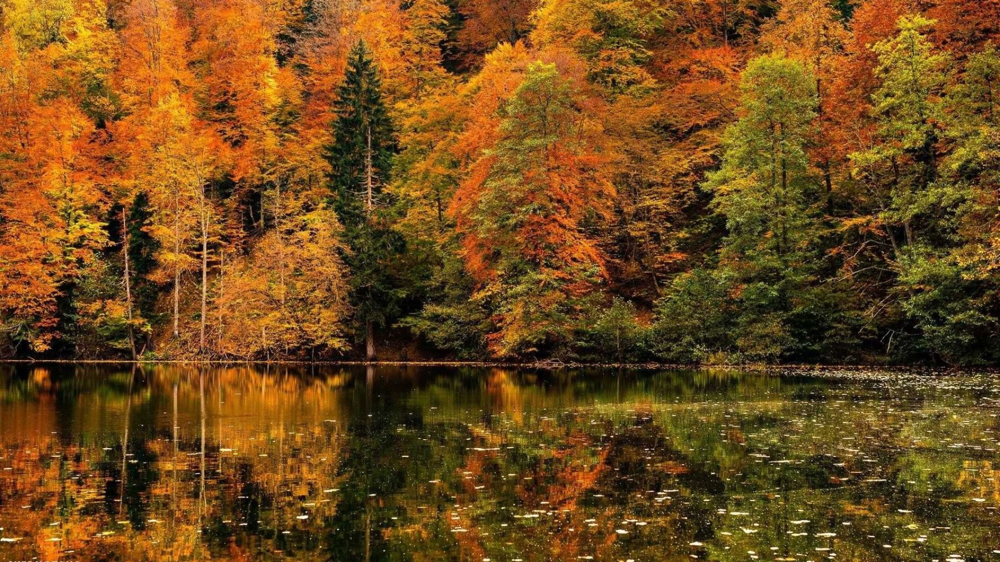

ბატეთის ტბა: ყველაფერი, რაც გამგზავრებამდე უნდა იცოდეთ
ძამას ხეობა შიდა ქართლის ერთ-ერთი ყველაზე მისტიკური და ლამაზი ადგილია, მისი მთავარი სიმბოლო კი — ბატეთის ტბაა. ამ სტატიაში გაგიზიარებთ პრაქტიკულ რჩევებს, როგორ დაგეგმოთ იდეალური უქმეები.

როდის არის საუკეთესო დრო სანახავად?
ბატეთის ტბა წელიწადის ნებისმიერ დროს განსხვავებულია, თუმცა ორი პერიოდი გამორჩეულია:
- შემოდგომა (ოქტომბრის ბოლო): როცა ტყე ათასფერად იღებება. ეს ფოტოგრაფების საყვარელი დროა.
- გაზაფხული (მაისი-ივნისი): როცა ბუნება იღვიძებს და ყველაფერი მკვეთრი მწვანეა.
როგორ მივიდეთ ბატეთის ტბამდე?
ბევრი მოგზაური უშვებს შეცდომას და ფიქრობს, რომ ტბამდე მსუბუქი ავტომობილით მივა. გაფრთხილებთ: ქარელიდან სოფელ გვერძინეთამდე გზა ასფალტირებულია, თუმცა შემდეგ იწყება რთული Off-road მონაკვეთი, სადაც მხოლოდ მაღალი გამავლობის ჯიპი გაივლის.
3 რჩევა კომფორტული ლაშქრობისთვის:
- ფეხსაცმელი: გზა ხშირად ტალახიანია, ამიტომ აუცილებლად ჩაიცვით სალაშქრო ბათინკები.
- საკვები: ტბასთან არ არის მაღაზიები. პროდუქტები ქარელშივე მოიმარაგეთ.
- ნაგავი: გთხოვთ, გაუფრთხილდეთ ბუნებას და ნაგავი უკან წამოიღოთ.
გსურთ ნახოთ ბატეთის ტბა უსაფრთხოდ?
დაგვიკავშირდით და ჩვენ უზრუნველვყოფთ თქვენს ტრანსპორტირებას კომფორტული ჯიპებით!
ტურის დაჯავშნა